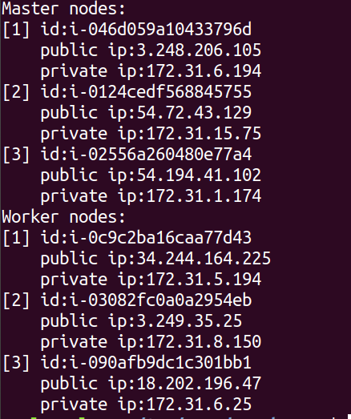

You can horizontally scale your
The node command has the following functionality:
| Command | Use | Options | Default behavior |
|---|---|---|---|
| add | Add a worker node to a cluster. |
Profile - define the type of node to be added. |
Uses the first profile in the cluster.yaml list unless otherwise specified. |
|
Count - specify how many nodes to be added. |
Adds 1 node unless otherwise specified. | ||
| remove | Removes a worker node from a cluster. |
Public IP - the public IP address of the machine to be removed from the cluster. |
|
|
Private IP - the private IP address of the machine to be removed from the cluster. |
|||
|
Profile - define the type of node to be removed. |
Uses the first profile in the cluster.yaml list unless otherwise specified. | ||
|
Count - specify how many nodes to be removed. |
Removes 1 node unless otherwise specified. | ||
| list | Lists all the master and worker nodes in a cluster along with their public and private IP addresses. |
| Command | Use | Options |
|---|---|---|
| add | Add a node to a cluster. You can add multiple nodes with a single command. |
Public IP - the public IP address of the machine to be added to the cluster |
|
Private IP - the private IP address of the machine to be added to the cluster |
||
| remove | Removes a node from a cluster. You may only remove a worker node. | |
| list | Lists all the master and worker nodes in a cluster along with their public and private IP addresses. |
To add a node to a cluster:
Type the following command to add two nodes of the default aws worker name profile:
node add --profile-"default aws worker name" --count=2Type the following command to add two nodes to the cluster (replace the sample IP addresses with your own machine IP addresses):
node add --ip=192.168.32.97 --ip=192.168.32.98To remove a node from a cluster:
Type the following command to remove two nodes of the default aws worker name profile:
node remove --profile-"default aws worker name" --count=2Type the following command to remove two nodes from the cluster (replace the sample IP addresses with your own machine IP addresses):
node remove --ip=192.168.32.97 --ip=192.168.32.98To list the nodes in a cluster:
Type the following command to get a list of all the master and worker nodes in the cluster:
node listThe output looks like this, with the public and private IP addresses of all the nodes.
